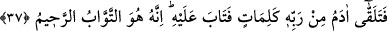

davrananları böyle mükâfâtlandırırız.” (es-Sâffât, 37/79) Allah’ın izniyle bu âyeti
okuyan yılanlardan emin olur.
Yılan, akrep, fare ve zehirli keler gibi tabîatı itibariyle zararlı olan hayvanların
öldürülmesi husûsunda âlimler ittifak etmiştir. el-Hidâye’nin Habbâzî hâşiyesinde
zararlarını def’ veya faydalarını celbetmek için hayvanların öldürülebileceği
söylenmiştir. Fakir de derim ki: Bal arısı ve ipek böceği de faydalarını elde etmek için
başka çâre yoksa öldürülebilirler.
Sa’dî der ki:
Elde taş ve yılan taşın üst tarafında iken,
Ölçüp biçerek taşı vurmamak akılsızlık ve uyuşukluktur.
Keskin dişli kaplana merhamet ve şefkat
Koyunlara zulüm ve cefâ demek olur.
et-Te’vîlâtü’n-Necmiyye’de şöyle denilmiştir: “Muhabbet dânesi Âdem’in kalbinde
tohum gibi filizlenince Allah, Âdem’in vücûdunu kalbine, yeryüzünü de kendisine
barınak (müstakar) yaptı. Yâni dünyâ, muhabbet tohumlarının ibâdet ve itâat sularıyla
filizlenerek, mârifet meyvası verecek ağacın yetiştirilme yeridir. “Rabbinin izniyle
meyvesini her an veren ağaç” (İbrâhîm, 14/25) burada yetişecektir. Hakikatte mahlûkat
ağacının meyvesi mârifettir. Müfessirlerin çoğu “Ben cinleri ve insanları bana ibâdet
etsinler diye yarattım” (ez-Zâriyât, 51/56) âyetindeki “İbâdet etsinler”i, “beni
tanısınlar” diye tefsir etmiştir. Mârifet meyvesinin ibâdet dallarından fışkırması için
tohumun muhabbet olması gerekir. Nitekim Peygamberimiz’in (s.a.) haber verdiğine
göre: Dâvud (a.s.) Allah Teâlâ’ya: “Ya Rabbi, mahlûkatı niye halkettin diye sormuş.
Allah Teâlâ cevâben: “Ben gizli bir hazîneydim, tanınmayı istedim. Beni tanımaları
için mahlûkatı yarattım.”[249] demiştir. Buradan açıkça anlaşılıyor ki mârifetin tohumu
muhabbettir.
Mesnevî’de der ki:
Mârifet güneşi için nakil yoktur
Onun doğduğu yer, sâdece gönül ile akıldır.
37. Bu durum devam ederken Âdem, Rabbinden birtakım ilhâmlar aldı ve derhal
tevbe etti. Çünkü Allah tevbeleri kabûl eden ve merhameti bol olandır.
Âyetin başındaki ki “fâ” harfi; Âdem’in yeryüzüne inmesinin emredilişinin, hemen
ardından, hatta daha yeryüzüne inmeden tevbe ettiğini gösterir. Kurtubî buradan;
Âdem’in önce tevbe ettiğini daha sonra yeryüzüne indiğini çıkarmıştır. Bu âyetten sonra
ikinci kez tekrar edilen “ininiz” emri buna işâret eder. O halde “inin” emrinde bir